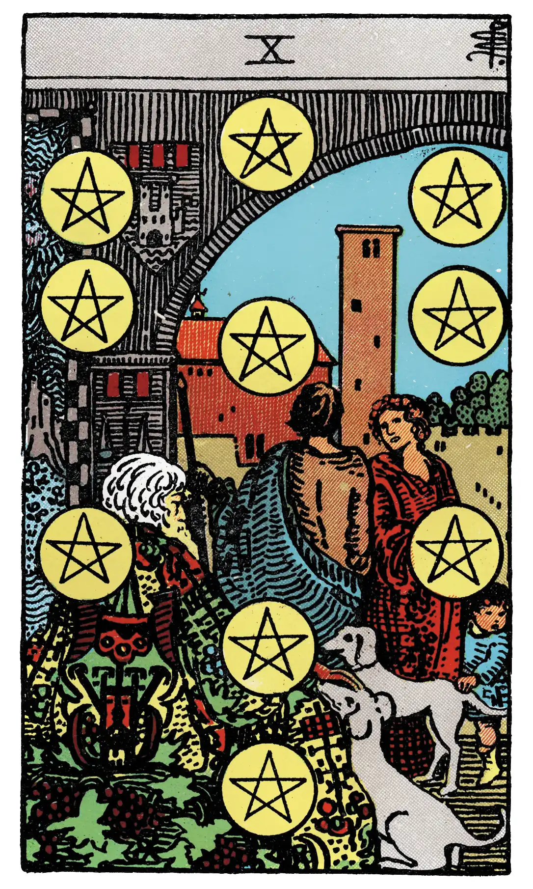

Ten of Pentacles

A.E.W.
Upright
Gain, riches; family matters, archives, extraction, the abode of a family.
Additionally
Represents house or dwelling, and derives its value from other cards.
Recurrence
2 - Change.
3 - New condition.
4 - Condemnation.
Reversed
Chance, fatality, loss, robbery, games of hazard; sometimes gift, dowry, pension.
Additionally
An occasion which may be fortunate or otherwise.
Recurrence
2 - Expectation justified.
3 - Disappointment.
4 - Event, happening.
S.L.M.M.
Upright
House, Dwelling, Habitation, Family
Reversed
Gambling, Dissipation, Robbery, Loss.
Description
A man and woman beneath an archway which gives entrance to a house and domain. They are accompanied by a child, who looks curiously at two dogs accosting an ancient personage seated in the foreground. The child's hand is on one of them.